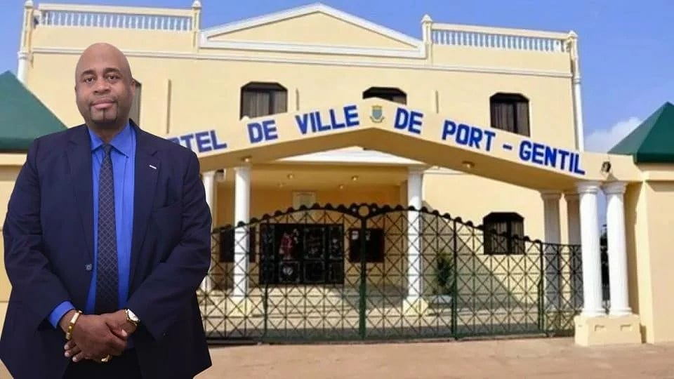

Accueil › La Mairie
La commune de Port-GentilUne mairie centrale, quatre mairies d'arrondissement
La Mairie de Port-Gentil administre la capitale économique du Gabon, chef-lieu de l'Ogooué-Maritime, bâtie sur l'île Mandji dans le delta de l'Ogooué.
Accueil › La Mairie
La commune de Port-GentilLa Mairie de Port-Gentil administre la capitale économique du Gabon, chef-lieu de l'Ogooué-Maritime, bâtie sur l'île Mandji dans le delta de l'Ogooué.

Financier de formation, passé par BNP Paribas et le Crédit Agricole, il a dirigé la Bourse des valeurs mobilières de l'Afrique centrale (BVMAC), avant d'être ministre délégué à l'Économie puis ministre de la Pêche et de l'Économie maritime, et président du conseil d'administration du Fonds gabonais d'investissements stratégiques (FGIS).
La commune est découpée en quatre arrondissements, chacun doté de sa mairie et de son maire, sous la coordination du maire central.
Organigramme simplifié, à compléter avec l'organigramme officiel des services.
Bâtie sur l'île Mandji, dans le delta de l'Ogooué, Port-Gentil est la deuxième ville du pays et son principal pôle pétrolier et portuaire. Elle est le chef-lieu de la province de l'Ogooué-Maritime.


Présenté par le maire le 13 mai 2026, l'audit interne a mis en lumière les chantiers prioritaires de l'administration. Le nouvel espace numérique y répond directement.
Archives désorganisées, données dispersées, traçabilité documentaire faible.
Un fonctionnement « largement manuel » et une digitalisation « quasi inexistante ».
Septembre 2026 : l'information n'est pas remontée à temps à la hiérarchie.
Sources : Gabonreview et Gabon Media Time (13 mai 2026), Infos Gabon (3 septembre 2026).